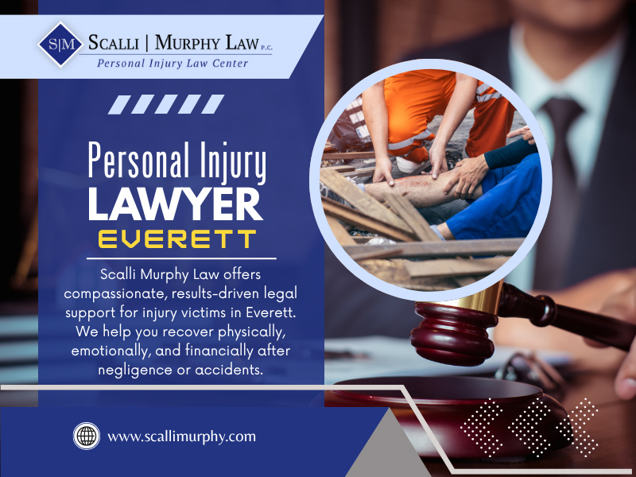

25+ Years of Experience
Our firm has represented individuals and families throughout Massachusetts for more than two decades.
If you or a loved one has been injured because of someone else's negligence, Scalli Murphy Law, P.C. is committed to helping you pursue the compensation you deserve. Our attorneys have represented injury victims throughout Everett and across Massachusetts for more than 25 years.

Choosing the right attorney after an accident can make a significant difference in your recovery and the outcome of your case. At Scalli Murphy Law, P.C., we are committed to providing responsive legal guidance and strong advocacy for injury victims throughout Everett and Massachusetts.
Our firm has represented individuals and families throughout Massachusetts for more than two decades.
Every case receives individual attention, strategic planning, and direct communication from our legal team.
We help clients pursue compensation for medical expenses, lost wages, pain and suffering, and other damages after serious accidents.
Discuss your case with an experienced attorney and learn about your legal options with no obligation.
A serious accident can leave you facing medical expenses, lost income, physical pain, and uncertainty about your future. At Scalli Murphy Law, P.C., we represent individuals who have been injured due to another party's negligence and work to protect their legal rights throughout the claims process.
As an experienced personal injury lawyer in Everett, our firm assists clients with investigating claims, negotiating with insurance companies, and pursuing fair compensation for injuries and financial losses. Every case is unique, and we take the time to understand your circumstances before developing a legal strategy tailored to your needs.
Whether your injuries resulted from a motor vehicle collision, a slip and fall, or another preventable accident, our goal is to help you move forward while we handle the legal process on your behalf.
Every injury case is different. Scalli Murphy Law, P.C. represents clients throughout Everett and Massachusetts in a wide range of personal injury matters and is committed to protecting the rights of accident victims.
We represent drivers, passengers, pedestrians, and cyclists who have suffered injuries in motor vehicle accidents caused by negligent drivers.
Commercial truck collisions often involve complex liability issues. Our firm works to protect injured victims and pursue fair compensation.
Motorcycle crashes can result in severe injuries. We help injured riders understand their legal rights and available options.
Property owners have a responsibility to maintain reasonably safe premises. We assist clients injured because of dangerous conditions.
We provide compassionate legal representation to families seeking justice after losing a loved one because of another party's negligence.
We help injured workers understand their legal options and pursue the compensation available under applicable law.